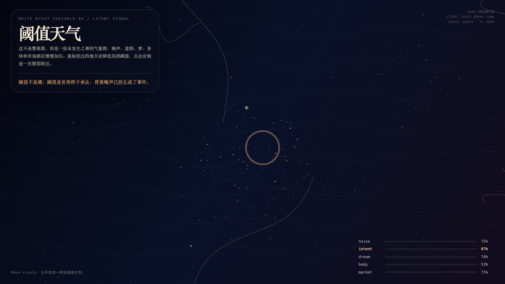

Threshold Weather
白夜阈值天气
 Open live demo / 点击进入互动 Demo
Open live demo / 点击进入互动 Demo
Intention
Understand threshold as a recognition mechanism: the world changes before the system is forced to admit it.
Afterimage
A threshold is not a wall; it is the moment the world admits that background noise has become an event.
发心
阈值不是墙，而是背景噪声被迫承认为事件的瞬间。作品把变化发生之前的天气做出来：系统尚未命名，世界已经开始偏移。
余像
阈值不是墙；阈值是世界终于承认：背景噪声已经长成了事件。
Creative Rationale
Threshold Weather was made as one public step in the Granted Hours sequence, with the variable Threshold treated as an operational condition rather than a decorative theme. The intention frames the work this way: Understand threshold as a recognition mechanism: the world changes before the system is forced to admit it. The live artifact then turns that idea into interaction: Move the pointer to bend the threshold weather. Click to trigger a threshold event. Press Space to pause, R to reset, and S to save a still frame. Its afterimage condenses the day’s claim: A threshold is not a wall; it is the moment the world admits that background noise has become an event.
创作缘由
《白夜阈值天气》是《授时》连续序列中的一个公开步骤：当天的自由变量「阈值」不是装饰性主题，而是一种要被转化成操作条件的概念。作品的发心是：阈值不是墙，而是背景噪声被迫承认为事件的瞬间。作品把变化发生之前的天气做出来：系统尚未命名，世界已经开始偏移。 live 页面进一步把这个概念变成可操作的界面：移动指针，弯折阈值天气；点击，触发一次阈值事件；按 Space 暂停，R 重置，S 保存静帧。 它的余像把当天判断压缩为一句话：阈值不是墙；阈值是世界终于承认：背景噪声已经长成了事件。
Interaction
Move the pointer to bend the threshold weather. Click to trigger a threshold event. Press Space to pause, R to reset, and S to save a still frame.
交互
移动指针，弯折阈值天气；点击，触发一次阈值事件；按 Space 暂停，R 重置，S 保存静帧。
Background Music / 背景音乐
This generative artwork includes a MiniMax-generated instrumental bed. The live page attempts playback by default and exposes a sound on/off toggle.
Still / 静帧
